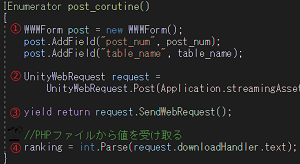
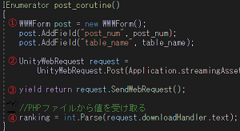

メモとか
Unity WebGLからphpを介してデータベースを利用する
Unity WebGLで、データベースを利用する方法について記したメモです。
Unity WebGLからPHPファイルへHTTPリクエストを送り、PHPファイルでデータベース(MySQL)とやり取りし、
PHPファイルからWebGL側へ所定のデータベースの値を返し、Unity WebGLでデータベースの値を利用する、
という方法について記してます。
個人的に作ったものや、技術についてのメモを置いているサイトです。 今はUnityとWeb関する内容を書いています。
Unity WebGLからphpを介してデータベースを利用する
Unity WebGLで、データベースを利用する方法について記したメモです。
Unity WebGLからPHPファイルへHTTPリクエストを送り、PHPファイルでデータベース(MySQL)とやり取りし、
PHPファイルからWebGL側へ所定のデータベースの値を返し、Unity WebGLでデータベースの値を利用する、
という方法について記してます。